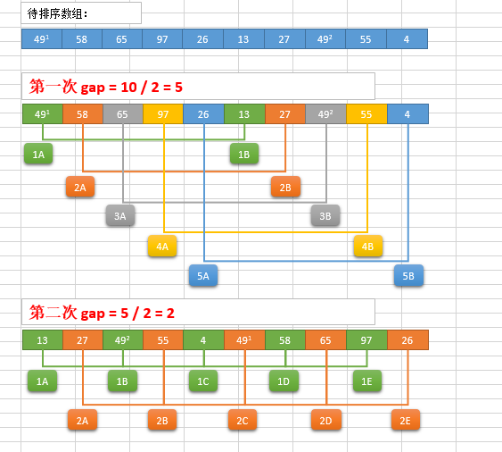
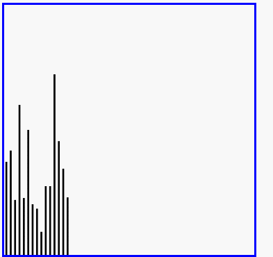

希尔排序
希尔排序(Shell Sort)是插入排序的一种。也称缩小增量排序，是直接插入排序算法的一种更高效的改进版本。希尔排序是非稳定排序算法。该方法因DL．Shell于1959年提出而得名。 希尔排序是把记录按下标的一定增量分组，对每组使用直接插入排序算法排序；随着增量逐渐减少，每组包含的关键词越来越多，当增量减至1时，整个文件恰被分成一组，算法便终止。
希尔排序过程
希尔排序的基本思想是：将数组列在一个表中并对列分别进行插入排序，重复这过程，不过每次用更长的列（步长更长了，列数更少了）来进行。最后整个表就只有一列了。将数组转换至表是为了更好地理解这算法，算法本身还是使用数组进行排序。
例如，假设有这样一组数[ 13 14 94 33 82 25 59 94 65 23 45 27 73 25 39 10 ]，如果我们以步长为5开始进行排序，我们可以通过将这列表放在有5列的表中来更好地描述算法，这样他们就应该看起来是这样(竖着的元素是步长组成)：
13 14 94 33 82
25 59 94 65 23
45 27 73 25 39
10
然后我们对每列进行排序：
10 14 73 25 23
13 27 94 33 39
25 59 94 65 82
45
将上述四行数字，依序接在一起时我们得到：[ 10 14 73 25 23 13 27 94 33 39 25 59 94 65 82 45 ]。这时10已经移至正确位置了，然后再以3为步长进行排序：
10 14 73
25 23 13
27 94 33
39 25 59
94 65 82
45
排序之后变为：
10 14 13
25 23 33
27 25 59
39 65 73
45 94 82
94
最后以1步长进行排序（此时就是简单的插入排序了）
希尔排序的分析

def shell_sort(alist):
n = len(alist)
# 初始步长
gap = n / 2
while gap > 0:
# 按步长进行插入排序
for i in range(gap, n):
j = i
# 插入排序
while j>=gap and alist[j-gap] > alist[j]:
alist[j-gap], alist[j] = alist[j], alist[j-gap]
j -= gap
# 得到新的步长
gap = gap / 2
alist = [54,26,93,17,77,31,44,55,20]
shell_sort(alist)
print(alist)
时间复杂度
- 最优时间复杂度：根据步长序列的不同而不同
- 最坏时间复杂度：O(n2)
- 稳定想：不稳定
希尔排序演示
